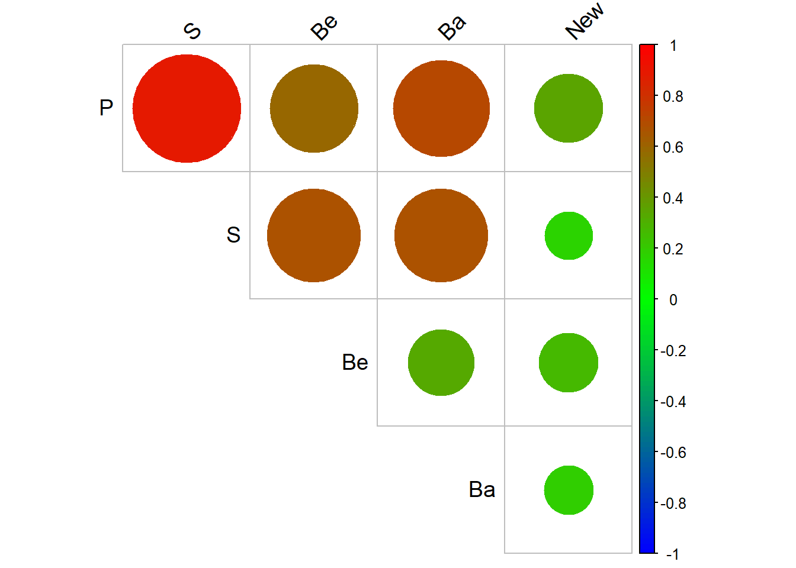
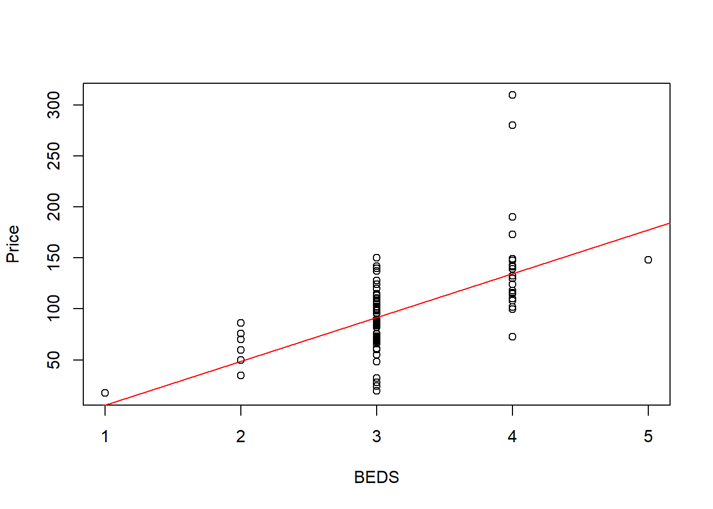
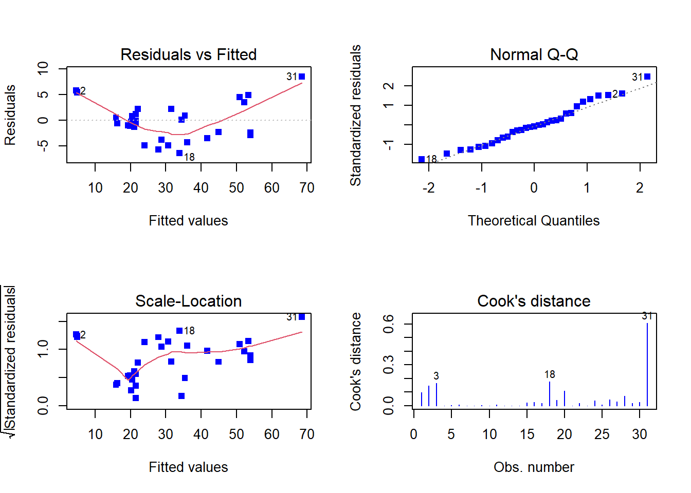
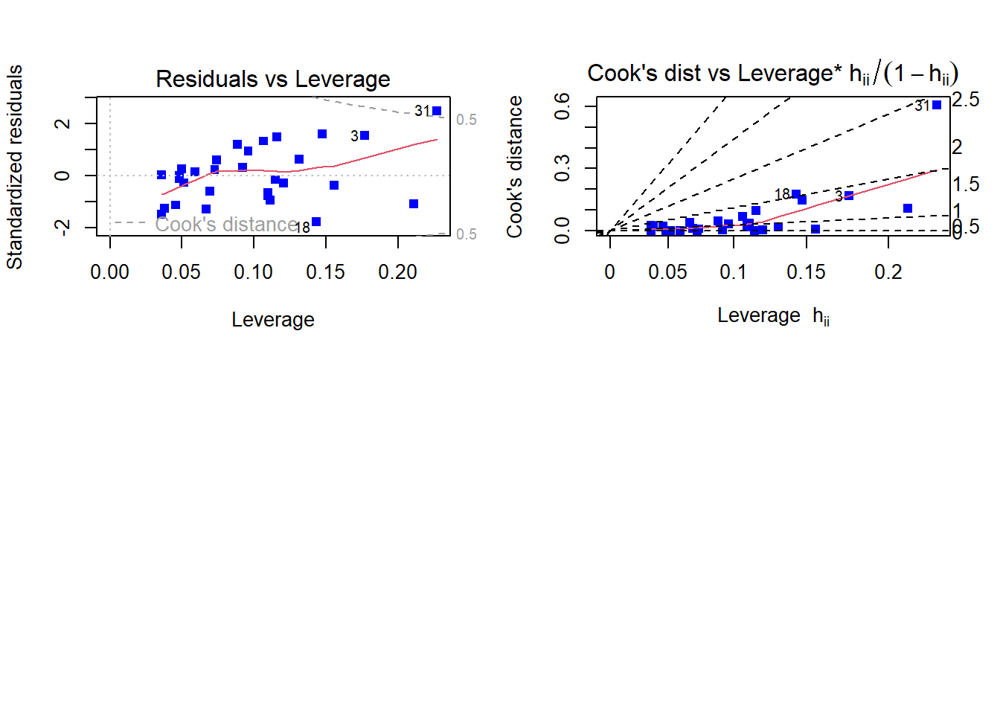
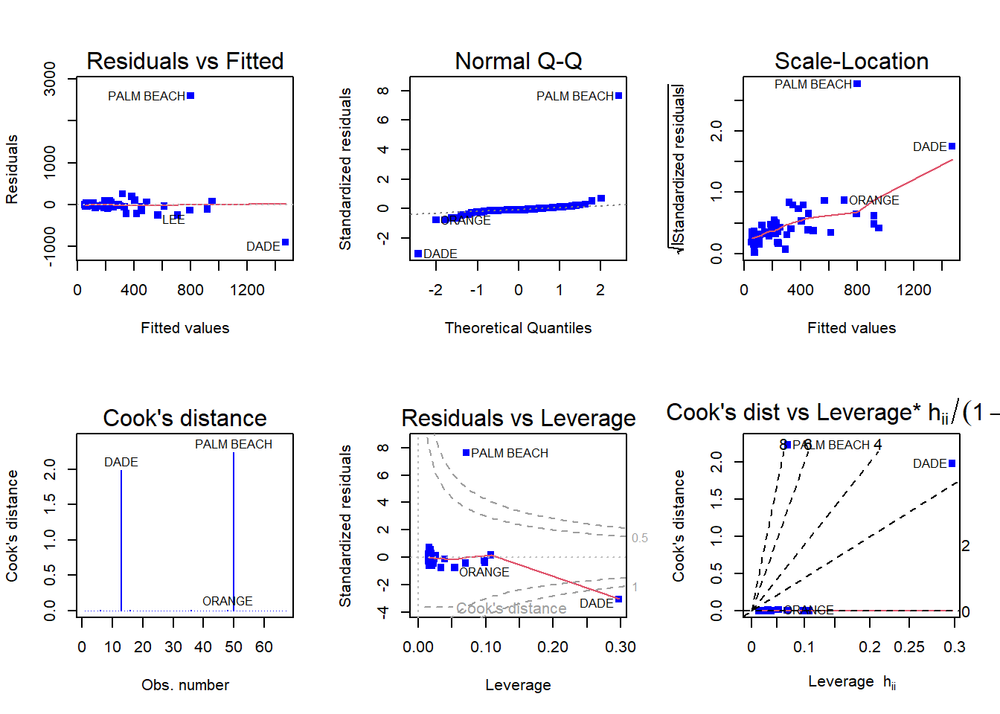
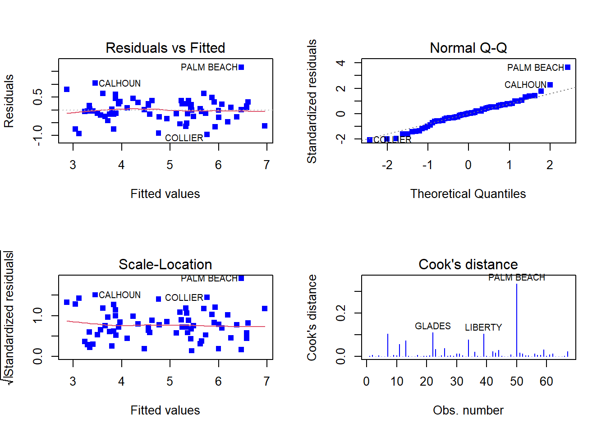
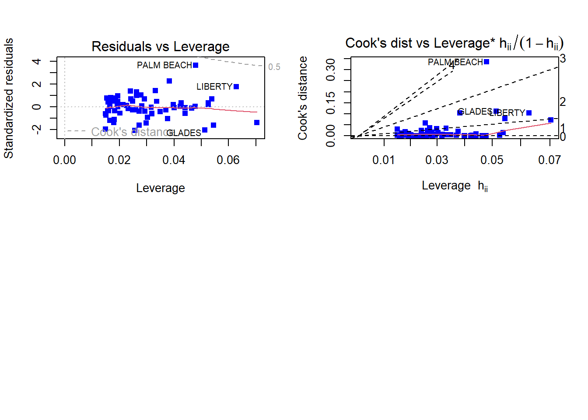

── Conflicts ────────────────────────────────────────── tidyverse_conflicts() ──
✖ dplyr::filter() masks stats::filter()
✖ dplyr::lag() masks stats::lag()
ℹ Use the conflicted package (<http://conflicted.r-lib.org/>) to force all conflicts to become errors
Code
library(alr4)
Loading required package: car
Loading required package: carData
Attaching package: 'car'
The following object is masked from 'package:dplyr':
recode
The following object is masked from 'package:purrr':
some
Loading required package: effects
lattice theme set by effectsTheme()
See ?effectsTheme for details.
Code
library(MPV)
Loading required package: lattice
Loading required package: KernSmooth
KernSmooth 2.23 loaded
Copyright M. P. Wand 1997-2009
Loading required package: randomForest
randomForest 4.7-1.1
Type rfNews() to see new features/changes/bug fixes.
Attaching package: 'randomForest'
The following object is masked from 'package:dplyr':
combine
The following object is masked from 'package:ggplot2':
margin
Code
library(smss)knitr::opts_chunk$set(echo =TRUE)
Question 1
(Data file: house.selling.price.2 from smss R package)
For the house.selling.price.2 data the tables below show a correlation matrix and a model fit using four predictors of selling price.
I prepared summary, correlation table, correlation plot, linear regression model for house.selling.price.2
P S Be Ba
Min. : 17.50 Min. :0.40 Min. :1.000 Min. :1.000
1st Qu.: 72.90 1st Qu.:1.33 1st Qu.:3.000 1st Qu.:2.000
Median : 96.00 Median :1.57 Median :3.000 Median :2.000
Mean : 99.53 Mean :1.65 Mean :3.183 Mean :1.957
3rd Qu.:115.00 3rd Qu.:1.98 3rd Qu.:4.000 3rd Qu.:2.000
Max. :309.40 Max. :3.85 Max. :5.000 Max. :3.000
New
Min. :0.0000
1st Qu.:0.0000
Median :0.0000
Mean :0.3011
3rd Qu.:1.0000
Max. :1.0000
Code
# creating house_price_2 object for house.selling.price.2house_price_2<-house.selling.price.2# Calculate the correlation matrixcorrelation_matrix <-cor(house_price_2)print(correlation_matrix, border =TRUE, lwd =2, col ="red")
P S Be Ba New
P 1.0000000 0.8988136 0.5902675 0.7136960 0.3565540
S 0.8988136 1.0000000 0.6691137 0.6624828 0.1762879
Be 0.5902675 0.6691137 1.0000000 0.3337966 0.2672091
Ba 0.7136960 0.6624828 0.3337966 1.0000000 0.1820651
New 0.3565540 0.1762879 0.2672091 0.1820651 1.0000000
Code
# Create a correlation plotcol <-colorRampPalette(c("blue", "green", "red"))(n =100)corrplot(correlation_matrix, type ="upper", tl.col ="black", tl.srt =45, tl.cex =1.2, method ="circle", col = col, diag =FALSE)

Correlation Analysis
The correlation table shows the strength and direction of the relationship between variables. The values on the off-diagonal represent the correlation coefficient between two variables. A strong positive correlation is observed between P and S (0.8988), while a moderate positive correlation exists between P and Ba (0.7137). P and Be exhibit a weak positive correlation (0.5903). In contrast, P and New have a weak positive correlation (0.3566).
Overall, the correlation table indicates that the predictor variables are moderately to strongly correlated with the response variable, with S demonstrating the strongest correlation. However, it is important to remember that correlation does not imply causation, and further analysis is necessary to determine the causal relationship between the variables.
Code
#linear regression for all predictorsfit_house_price_2<-lm(P~.,house_price_2)#summary linear model house price 2 summary(fit_house_price_2)
Call:
lm(formula = P ~ ., data = house_price_2)
Residuals:
Min 1Q Median 3Q Max
-36.212 -9.546 1.277 9.406 71.953
Coefficients:
Estimate Std. Error t value Pr(>|t|)
(Intercept) -41.795 12.104 -3.453 0.000855 ***
S 64.761 5.630 11.504 < 2e-16 ***
Be -2.766 3.960 -0.698 0.486763
Ba 19.203 5.650 3.399 0.001019 **
New 18.984 3.873 4.902 4.3e-06 ***
---
Signif. codes: 0 '***' 0.001 '**' 0.01 '*' 0.05 '.' 0.1 ' ' 1
Residual standard error: 16.36 on 88 degrees of freedom
Multiple R-squared: 0.8689, Adjusted R-squared: 0.8629
F-statistic: 145.8 on 4 and 88 DF, p-value: < 2.2e-16
Regression Analysis
The linear regression analysis shows that the variables S, Ba, and New are statistically significant predictors of the response variable P, with p-values less than 0.05. The intercept term is also statistically significant. The model explains a large portion of the variation in the response variable, with a multiple R-squared value of 0.8689. The residual standard error of 16.36 indicates that the model’s predicted values are within 16.36 units of the actual values on average.
A
For backward elimination, which variable would be deleted first? Why?
In backward elimination, the variable with the highest p-value is deleted first. This is because the p-value measures the statistical significance of each variable, and a high p-value indicates that there is a high probability that the variable’s coefficient is not significantly different from zero, and therefore the variable is not contributing significantly to the model.
For question 1.A, the variable “Be/Beds” has the highest p-value of 0.486763, which is greater than the significance level of 0.05, it would be the first variable to be removed. This conclusion can be confirmed by using the step() function.
Code
# fit full modelfit_full <-lm(P ~ ., data = house_price_2)# perform backward stepwise selectionfit_backward <-step(fit_full, direction ="backward")
Start: AIC=524.7
P ~ S + Be + Ba + New
Df Sum of Sq RSS AIC
- Be 1 131 23684 523.21
<none> 23553 524.70
- Ba 1 3092 26645 534.17
- New 1 6432 29985 545.15
- S 1 35419 58972 608.06
Step: AIC=523.21
P ~ S + Ba + New
Df Sum of Sq RSS AIC
<none> 23684 523.21
- Ba 1 3550 27234 534.20
- New 1 6349 30033 543.30
- S 1 54898 78582 632.75
Code
summary(fit_backward)
Call:
lm(formula = P ~ S + Ba + New, data = house_price_2)
Residuals:
Min 1Q Median 3Q Max
-34.804 -9.496 0.917 7.931 73.338
Coefficients:
Estimate Std. Error t value Pr(>|t|)
(Intercept) -47.992 8.209 -5.847 8.15e-08 ***
S 62.263 4.335 14.363 < 2e-16 ***
Ba 20.072 5.495 3.653 0.000438 ***
New 18.371 3.761 4.885 4.54e-06 ***
---
Signif. codes: 0 '***' 0.001 '**' 0.01 '*' 0.05 '.' 0.1 ' ' 1
Residual standard error: 16.31 on 89 degrees of freedom
Multiple R-squared: 0.8681, Adjusted R-squared: 0.8637
F-statistic: 195.3 on 3 and 89 DF, p-value: < 2.2e-16
Backward Elimination Analysis:
The backward stepwise selection approach was used to determine the best predictors of house prices. Backward elimination starts with a full model, and successively drops variables that do not contribute to the model meaningfully. Therefore, since the variable Be has the largest p-value of 0.4867 it would be eliminated first.
The final model included three predictor variables, namely S, Ba, and New, with a significant positive effect on the response variable P. The adjusted R-squared value of 0.8637 indicates that these variables explain approximately 86.37% of the variability in P. The significant F-statistic and low p-value further support the idea that the model is a good fit for the data. Overall, the results suggest that the selected variables can be used as reliable predictors of house prices.
B
For forward selection, which variable would be added first? Why?
Code
# Perform forward selectionforward_model <-step(fit_full, direction ="forward")
Start: AIC=524.7
P ~ S + Be + Ba + New
Code
summary(forward_model)
Call:
lm(formula = P ~ S + Be + Ba + New, data = house_price_2)
Residuals:
Min 1Q Median 3Q Max
-36.212 -9.546 1.277 9.406 71.953
Coefficients:
Estimate Std. Error t value Pr(>|t|)
(Intercept) -41.795 12.104 -3.453 0.000855 ***
S 64.761 5.630 11.504 < 2e-16 ***
Be -2.766 3.960 -0.698 0.486763
Ba 19.203 5.650 3.399 0.001019 **
New 18.984 3.873 4.902 4.3e-06 ***
---
Signif. codes: 0 '***' 0.001 '**' 0.01 '*' 0.05 '.' 0.1 ' ' 1
Residual standard error: 16.36 on 88 degrees of freedom
Multiple R-squared: 0.8689, Adjusted R-squared: 0.8629
F-statistic: 145.8 on 4 and 88 DF, p-value: < 2.2e-16
Forward Selection Analysis:
In forward selection, the variable with the lowest p-value is added first, as a smaller p-value indicates a stronger evidence against the null hypothesis that the predictor has no effect on the response variable.
In the full model, we can see that the variable with the lowest p-value is S (p-value < 2e-16), indicating that it is highly significant in predicting the house price. Therefore, if we were to use forward selection based on p-values, S would be added first to the model, followed by Ba, New, and finally Be, in that order, as none of the other variables have p-values lower than S.
C
Why do you think that BEDS has such a large P-value in the multiple regression model, even though it has a substantial correlation with PRICE?
Code
# Fit multiple regression modelfit <-lm(P ~ ., data = house_price_2)# Calculate VIF for each predictor variablevif <-vif(fit)# Print VIF valuesprint(vif)
S Be Ba New
3.005554 1.985583 1.887778 1.096606
Code
# Scatter plot of PRICE against BEDSplot(house_price_2$Be, house_price_2$P, xlab ="BEDS", ylab ="Price")# Add a linear regression line to the plotabline(lm(P ~ Be, data = house_price_2), col ="red")

Code
# size of Dataset, house_price_2n <-nrow(house_price_2)print(n)
[1] 93
Analysis:
Regression model can be impacted by various factors such as multicollinearity, other predictors, unaccounted confounding factors, and small sample size.
While the VIF values above indicate no significant multicollinearity among predictor variables, the presence of outliers and non-linearity can still affect the model’s accuracy and interpretability.
Despite a strong correlation between BEDS and PRICE, the large p-value of BEDS in the multiple regression model suggests that its relationship with PRICE is not significant after controlling for other predictor variables. Other predictors included in the model might explain some of the variability that BEDS previously accounted for, or there could be other unaccounted confounding factors that affect the relationship. Therefore, a thorough examination of other predictors and potential confounding factors is necessary for an accurate interpretation of the regression analysis results.
Moreover, sample size can affect the precision of estimates, and a small sample size of 93 may be inadequate, which could contribute to the large p-value and substantial correlation observed.
D
Using software with these four predictors, find the model that would be selected using each criterion:
R2
Adjusted R2
PRESS
AIC
BIC
Prepared different linear regression models fitted to the “house_price_2” dataset with different combination of independent variables.
Code
summary(lm(P ~ S, data = house_price_2))
Call:
lm(formula = P ~ S, data = house_price_2)
Residuals:
Min 1Q Median 3Q Max
-56.407 -10.656 2.126 11.412 85.091
Coefficients:
Estimate Std. Error t value Pr(>|t|)
(Intercept) -25.194 6.688 -3.767 0.000293 ***
S 75.607 3.865 19.561 < 2e-16 ***
---
Signif. codes: 0 '***' 0.001 '**' 0.01 '*' 0.05 '.' 0.1 ' ' 1
Residual standard error: 19.47 on 91 degrees of freedom
Multiple R-squared: 0.8079, Adjusted R-squared: 0.8058
F-statistic: 382.6 on 1 and 91 DF, p-value: < 2.2e-16
Code
summary(lm(P ~ S+New, data = house_price_2))
Call:
lm(formula = P ~ S + New, data = house_price_2)
Residuals:
Min 1Q Median 3Q Max
-47.207 -9.763 -0.091 9.984 76.405
Coefficients:
Estimate Std. Error t value Pr(>|t|)
(Intercept) -26.089 5.977 -4.365 3.39e-05 ***
S 72.575 3.508 20.690 < 2e-16 ***
New 19.587 3.995 4.903 4.16e-06 ***
---
Signif. codes: 0 '***' 0.001 '**' 0.01 '*' 0.05 '.' 0.1 ' ' 1
Residual standard error: 17.4 on 90 degrees of freedom
Multiple R-squared: 0.8484, Adjusted R-squared: 0.845
F-statistic: 251.8 on 2 and 90 DF, p-value: < 2.2e-16
Code
summary(lm(P ~ ., data = house_price_2))
Call:
lm(formula = P ~ ., data = house_price_2)
Residuals:
Min 1Q Median 3Q Max
-36.212 -9.546 1.277 9.406 71.953
Coefficients:
Estimate Std. Error t value Pr(>|t|)
(Intercept) -41.795 12.104 -3.453 0.000855 ***
S 64.761 5.630 11.504 < 2e-16 ***
Be -2.766 3.960 -0.698 0.486763
Ba 19.203 5.650 3.399 0.001019 **
New 18.984 3.873 4.902 4.3e-06 ***
---
Signif. codes: 0 '***' 0.001 '**' 0.01 '*' 0.05 '.' 0.1 ' ' 1
Residual standard error: 16.36 on 88 degrees of freedom
Multiple R-squared: 0.8689, Adjusted R-squared: 0.8629
F-statistic: 145.8 on 4 and 88 DF, p-value: < 2.2e-16
Code
summary(lm(P ~ . -Be, data = house_price_2))
Call:
lm(formula = P ~ . - Be, data = house_price_2)
Residuals:
Min 1Q Median 3Q Max
-34.804 -9.496 0.917 7.931 73.338
Coefficients:
Estimate Std. Error t value Pr(>|t|)
(Intercept) -47.992 8.209 -5.847 8.15e-08 ***
S 62.263 4.335 14.363 < 2e-16 ***
Ba 20.072 5.495 3.653 0.000438 ***
New 18.371 3.761 4.885 4.54e-06 ***
---
Signif. codes: 0 '***' 0.001 '**' 0.01 '*' 0.05 '.' 0.1 ' ' 1
Residual standard error: 16.31 on 89 degrees of freedom
Multiple R-squared: 0.8681, Adjusted R-squared: 0.8637
F-statistic: 195.3 on 3 and 89 DF, p-value: < 2.2e-16
Code
summary(lm(P ~ . -Be -Ba, data = house_price_2))
Call:
lm(formula = P ~ . - Be - Ba, data = house_price_2)
Residuals:
Min 1Q Median 3Q Max
-47.207 -9.763 -0.091 9.984 76.405
Coefficients:
Estimate Std. Error t value Pr(>|t|)
(Intercept) -26.089 5.977 -4.365 3.39e-05 ***
S 72.575 3.508 20.690 < 2e-16 ***
New 19.587 3.995 4.903 4.16e-06 ***
---
Signif. codes: 0 '***' 0.001 '**' 0.01 '*' 0.05 '.' 0.1 ' ' 1
Residual standard error: 17.4 on 90 degrees of freedom
Multiple R-squared: 0.8484, Adjusted R-squared: 0.845
F-statistic: 251.8 on 2 and 90 DF, p-value: < 2.2e-16
a. R^2
The model with the most explanatory variables has the highest R-squared value of 0.8689, it indicates that this model accounts for 86.89% of the variability in the response variable. Based on this criterion, selecting a model that maximizes the R-squared value would lead to the selection of the model with all predictor variables included, resulting in the equation: ŷ = -41.79 + 64.76(Size) - 2.77(Beds) + 19.2(Baths) + 18.98(New).
b. Adjusted R^2
The adjusted R-squared value of the model with Size, Baths, and New as explanatory variables and excluding Beds is 0.8637, indicating that this model explains around 86.37% of the variation in the response variable. It also considers the possibility that some of the variables may not be significant or may be redundant.
Based on the adjusted R-squared criterion, the model with Size, Baths, and New is the most appropriate for predicting selling price, as it has the highest adjusted R-squared value among the tested models. The model is represented by ŷ = -47.99 + 62.26(Size) + 20.07(Baths) + 18.37(New).
c. PRESS
I prepared different linear regression models, fitted on the “house_price_2” dataset with varying combinations of independent variables, and PRESS is used to evaluate the predictive performance of the models.
Code
PRESS(lm(P ~ S, data = house_price_2))
[1] 38203.29
Code
PRESS(lm(P ~ S+New, data = house_price_2))
[1] 31066
Code
PRESS(lm(P ~ ., data = house_price_2))
[1] 28390.22
Code
PRESS(lm(P ~ . -Be, data = house_price_2))
[1] 27860.05
Code
PRESS(lm(P ~ . -Be -Ba, data = house_price_2))
[1] 31066
Based on the Predictive Residual Sum of Squares (PRESS) criterion, a smaller value indicates a better predictive model. Five regression models were evaluated, and the results indicate that the model with Size, Baths, and New as predictors (excluding Bed) has the lowest PRESS value of 27,860.05. This finding suggests that this model is the most effective in predicting the selling price of houses in this dataset.
Thus, based on the PRESS criterion, it is reasonable to select the model with Size, Baths, and New as variables for predicting selling price.
d. AIC
I prepared different linear regression models, fitted on the “house_price_2” dataset with varying combinations of independent variables, and AIC is used to evaluate the predictive performance of the models.
Code
AIC(lm(P ~ S, data = house_price_2))
[1] 820.1439
Code
AIC(lm(P ~ S+New, data = house_price_2))
[1] 800.1262
Code
AIC(lm(P ~ ., data = house_price_2))
[1] 790.6225
Code
AIC(lm(P ~ . -Be, data = house_price_2))
[1] 789.1366
Code
AIC(lm(P ~ . -Be -Ba, data = house_price_2))
[1] 800.1262
When considering the Akaike Information Criterion (AIC), a lower AIC value indicates a better model fit. In this case, the AIC values have been calculated for five different regression models. The results show that the model with Size, Baths, and New as predictors (excluding Bed and Basement) has the lowest AIC value of 789.1366. This suggests that this model provides the best balance between model complexity and goodness of fit, compared to the other models.
Therefore, based on the AIC criterion, it seems reasonable to select the model with Size, Baths, and New; as variables for predicting selling price.
e. BIC
I prepared different linear regression models, fitted on the “house_price_2” dataset with varying combinations of independent variables, and BIC is used to evaluate the predictive performance of the models.
Code
BIC(lm(P ~ S, data = house_price_2))
[1] 827.7417
Code
BIC(lm(P ~ S+New, data = house_price_2))
[1] 810.2566
Code
BIC(lm(P ~ ., data = house_price_2))
[1] 805.8181
Code
BIC(lm(P ~ . -Be, data = house_price_2))
[1] 801.7996
Code
BIC(lm(P ~ . -Be -Ba, data = house_price_2))
[1] 810.2566
The Bayesian Information Criterion (BIC) is a statistical criterion used for model selection in regression analysis that balances the goodness of fit of the model with its complexity. A lower BIC value indicates a better fit of the model to the data, while also taking into account the number of predictors included in the model.
In this case, the model with the lowest BIC value is the one that includes all predictors except for Bed, with a BIC value of 801.7996. This suggests that this model is the best fit for the data while also being the least complex. Therefore, based on the BIC criterion, it would be reasonable to select the model with Size, Baths, and New as predictors for predicting selling price, while excluding Bed.
E
Code
summary(lm(P ~ . -Be, data = house_price_2))
Call:
lm(formula = P ~ . - Be, data = house_price_2)
Residuals:
Min 1Q Median 3Q Max
-34.804 -9.496 0.917 7.931 73.338
Coefficients:
Estimate Std. Error t value Pr(>|t|)
(Intercept) -47.992 8.209 -5.847 8.15e-08 ***
S 62.263 4.335 14.363 < 2e-16 ***
Ba 20.072 5.495 3.653 0.000438 ***
New 18.371 3.761 4.885 4.54e-06 ***
---
Signif. codes: 0 '***' 0.001 '**' 0.01 '*' 0.05 '.' 0.1 ' ' 1
Residual standard error: 16.31 on 89 degrees of freedom
Multiple R-squared: 0.8681, Adjusted R-squared: 0.8637
F-statistic: 195.3 on 3 and 89 DF, p-value: < 2.2e-16
Based on the various criteria analyzed, including R-Squared, Adjusted R-Squared, PRESS, AIC, and BIC, the model with the highest overall performance and thus the best fit for predicting selling price is the one that excludes Beds and includes Size, Baths, and New as variables. This model has a lower PRESS value, a lower AIC value, and a lower BIC value than the model that includes all variables. Additionally, it has a slightly higher adjusted R-squared value than the full model. Therefore, the preferred model for predicting selling price is: ŷ = -47.99 + 62.26(Size) + 20.07(Baths) + 18.37(New). It is important to note that while R-Squared is not the sole determinant of model strength, it can still provide some insight into the model’s performance.
Question 2
(Data file: trees from base R) From the documentation: “This data set provides measurements of the diameter, height and volume of timber in 31 felled black cherry trees. Note that the diameter (in inches) is erroneously labeled Girth in the data. It is measured at 4 ft 6 in above the ground.” Tree volume estimation is a big deal, especially in the lumber industry. Use the trees data to build a basic model of tree volume prediction. In particular,
Code
data("trees")head(trees)
Code
summary(trees)
Girth Height Volume
Min. : 8.30 Min. :63 Min. :10.20
1st Qu.:11.05 1st Qu.:72 1st Qu.:19.40
Median :12.90 Median :76 Median :24.20
Mean :13.25 Mean :76 Mean :30.17
3rd Qu.:15.25 3rd Qu.:80 3rd Qu.:37.30
Max. :20.60 Max. :87 Max. :77.00
Code
#renaming erroneously labelled variable Girth to Diametertrees_d<-trees %>%rename(Diameter=Girth)
Prepared Data and Summary of trees dataset; renamed the variable Girth to Diameter since in the instructions it says,that Girth is labelled erroneously.
A
Fit a multiple regression model with the Volume as the outcome and Girth and Height as the explanatory variables
Code
model <-lm(Volume ~ Diameter + Height, data = trees_d)summary(model)
Call:
lm(formula = Volume ~ Diameter + Height, data = trees_d)
Residuals:
Min 1Q Median 3Q Max
-6.4065 -2.6493 -0.2876 2.2003 8.4847
Coefficients:
Estimate Std. Error t value Pr(>|t|)
(Intercept) -57.9877 8.6382 -6.713 2.75e-07 ***
Diameter 4.7082 0.2643 17.816 < 2e-16 ***
Height 0.3393 0.1302 2.607 0.0145 *
---
Signif. codes: 0 '***' 0.001 '**' 0.01 '*' 0.05 '.' 0.1 ' ' 1
Residual standard error: 3.882 on 28 degrees of freedom
Multiple R-squared: 0.948, Adjusted R-squared: 0.9442
F-statistic: 255 on 2 and 28 DF, p-value: < 2.2e-16
The linear regression model predicts tree volume based on the diameter and height of the tree. Both predictors have small p-values, indicating statistical significance and supporting the idea that they are related to tree volume. The model has a high degree of linear correlation, with an R-squared value close to 1.00 at 0.948, indicating that it explains a large proportion of the variance in the data. The adjusted R-squared value is also high at 0.9442, indicating that the model is not overfitting to the data.
B
Run regression diagnostic plots on the model. Based on the plots, do you think any of the regression assumptions is violated?
Code
par(mfrow =c(2, 2)); plot(model, pch=15, col='blue', which =1:6)


Residuals vs. Fitted
The residuals vs. fitted values plot is a useful tool for detecting non-linear patterns in the residuals. When the red line is approximately flat and horizontal at zero, it suggests that the residuals follow a linear pattern. In the case of the trees dataset, the red line is not perfectly horizontal, but it deviates only slightly. This indicates that the residuals exhibit a roughly non-linear pattern and that a non-linear model may be more appropriate for this data. Thus, the assumption of linearity in the regression model is violated.
Normal Q-Q
This plot is used to check if the residuals of a regression model are normally distributed. If the points in the plot follow a straight diagonal line, it can be assumed that the residuals have a normal distribution. In this dataset, the points generally follow a straight diagonal line, indicating that the residuals are normally distributed. However, there are a few observations near the top of the plot that deviate from the line, suggesting some potential non-normality. Overall, it’s difficult to confidently determine if the assumption of normality is violated based on this plot alone.
Scale-Location
The plot being referred to is the Scale-Location plot. It checks the assumption of equal variance, or homoscedasticity, among the residuals in the regression model. A horizontal red line across the plot indicates that the assumption of equal variance is likely met. However, in this case, the red line is not horizontal, which may suggest that equal variance is violated. This violation is also suggested by the non-horizontal trend-line in the Scale-Location plot. Therefore, the assumption of constant variance may be violated for this dataset.
The Cook’s Distance plot is used to identify influential observations in a regression model by combining leverage and residual information. It provides a summary of how much the model changes if a certain data point is removed. For this dataset, the plot indicates that observations 31, 18, and 3 have the highest Cook’s Distances, which are also confirmed by the Cook’s Distance function. These observations are considered highly influential.
Residuals vs. Leverage
This plot is designed to identify influential observations with high leverage, where points outside the Cook’s distance lines are deemed influential. Here, the presence of highly leveraged observations suggests the existence of influential points in the data.
Cooks Distance vs Leverage
Similar to the Cook’s Distance plot, this plot also helps identify highly influential data points. In this case, we can see that data points 3, 18, and 31 are highly influential, which is consistent with the Cook’s Distance plot.
Question 3
(Data file: florida in alr R package) In the 2000 election for U.S. president, the counting of votes in Florida was controversial. In Palm Beach County in south Florida, for example, voters used a so-called butterfly ballot. Some believe that the layout of the ballot caused some voters to cast votes for Buchanan when their intended choice was Gore.
The data has variables for the number of votes for each candidate—Gore, Bush, and Buchanan.
Code
data("florida")head(florida)
Code
summary(florida)
Gore Bush Buchanan
Min. : 788 Min. : 1316 Min. : 9.0
1st Qu.: 3055 1st Qu.: 4746 1st Qu.: 46.5
Median : 14152 Median : 20196 Median : 114.0
Mean : 43341 Mean : 43356 Mean : 258.5
3rd Qu.: 45974 3rd Qu.: 56542 3rd Qu.: 285.5
Max. :386518 Max. :289456 Max. :3407.0
A
Run a simple linear regression model where the Buchanan vote is the outcome and the Bush vote is the explanatory variable. Produce the regression diagnostic plots. Is Palm Beach County an outlier based on the diagnostic plots? Why or why not?
Code
model <-lm(formula = Buchanan ~ Bush, data = florida)summary(model)
Call:
lm(formula = Buchanan ~ Bush, data = florida)
Residuals:
Min 1Q Median 3Q Max
-907.50 -46.10 -29.19 12.26 2610.19
Coefficients:
Estimate Std. Error t value Pr(>|t|)
(Intercept) 4.529e+01 5.448e+01 0.831 0.409
Bush 4.917e-03 7.644e-04 6.432 1.73e-08 ***
---
Signif. codes: 0 '***' 0.001 '**' 0.01 '*' 0.05 '.' 0.1 ' ' 1
Residual standard error: 353.9 on 65 degrees of freedom
Multiple R-squared: 0.3889, Adjusted R-squared: 0.3795
F-statistic: 41.37 on 1 and 65 DF, p-value: 1.727e-08
Analysis:
The linear regression model aims to predict Buchanan’s votes based on the number of votes for Bush in Florida. The model found a significant relationship between the two variables, with Bush’s coefficient estimate at 0.0049 and a very small p-value of 1.73e-08, which means that the probability of getting such a result by chance is almost zero. The intercept estimate, however, is not significant with a p-value of 0.409. The R-squared value of 0.3889 suggests that the model explains 38.89% of the variance in Buchanan’s votes. The adjusted R-squared value of 0.3795 is slightly lower, indicating that adding the Bush variable did not significantly improve the model’s fit. The residual standard error of 353.9 suggests that the model’s predictions may deviate from the actual values by an average of 353.9 votes.
Code
par(mfrow =c(2, 3))plot(model, pch =15, col='blue', which =1:6)

Analysis:
Based on the diagnostic plots, Palm Beach County is an outlier. First, when looking at the residuals vs fitted plot, the Palm Beach County residual is very large. When referring to the summary of the simple regression model, the third quartile for residuals is 12.26, yet the max is 2610.19. This is a significant jump and indicative of the value being an outlier. The normal Q-Q plot also indicates that the residuals for the model are generally normal except for the Palm Beach County residual, as it greatly deviates from the line in the plot. The Cook’s distance plot shows two points that may be of concern as outliers if you follow the metric of observations scoring over 1, which are DADE and Palm Beach at about 2. The residuals and leverages plot shows the Palm Beach County standardized residual value beyond the dashed line indicating Cook’s distance. This also suggests that the observation is an outlier and the observation has the potential to influence the regression model.
B
Code
model <-lm(formula =log(Buchanan) ~log(Bush), data = florida)summary(model)
Call:
lm(formula = log(Buchanan) ~ log(Bush), data = florida)
Residuals:
Min 1Q Median 3Q Max
-0.96075 -0.25949 0.01282 0.23826 1.66564
Coefficients:
Estimate Std. Error t value Pr(>|t|)
(Intercept) -2.57712 0.38919 -6.622 8.04e-09 ***
log(Bush) 0.75772 0.03936 19.251 < 2e-16 ***
---
Signif. codes: 0 '***' 0.001 '**' 0.01 '*' 0.05 '.' 0.1 ' ' 1
Residual standard error: 0.4673 on 65 degrees of freedom
Multiple R-squared: 0.8508, Adjusted R-squared: 0.8485
F-statistic: 370.6 on 1 and 65 DF, p-value: < 2.2e-16
Analysis:
This is a linear regression model where the dependent variable is the natural logarithm of Buchanan’s votes and the independent variable is the natural logarithm of Bush’s votes in Florida. The model shows a significant positive relationship between the two variables, with a coefficient estimate of 0.75772 for log(Bush) and a very small p-value of <2e-16, indicating that the relationship is not due to chance. The intercept estimate of -2.57712 is also significant with a small p-value of 8.04e-09. The model’s R-squared value of 0.8508 indicates that 85.08% of the variance in Buchanan’s votes is explained by the model, and the adjusted R-squared value of 0.8485 suggests that adding the Bush variable did not significantly improve the model’s fit. The residual standard error of 0.4673 suggests that the model’s predictions may deviate from the actual values by an average of 0.4673 votes.
Code
par(mfrow =c(2, 2))plot(model, pch =15, col='blue', which =1:6)


Analysis:
After examining the diagnostic plots, it appears that Palm Beach County is still an outlier. The residuals vs fitted plot shows that the Palm Beach County residual remains unusually large. The normal Q-Q plot also indicates that the residuals for the model are generally normal except for the Palm Beach County residual, which significantly deviates from the line in the plot. According to the Cook’s distance plot, Palm Beach County is an outlier with a score of about 0.3, which exceeds the threshold of 0.2. In addition, the residuals and leverages plot shows that the standardized residual value for Palm Beach County is beyond the dashed line indicating Cook’s distance, further suggesting that this observation is an outlier and has the potential to influence the regression model.
Source Code
---title: "Homework 5"author: "Akhilesh Kumar"description: "The fifth homework"date: "05/9/2023"format: html: df-print: paged css: styles.css toc: true code-fold: true code-copy: true code-tools: truecategories: - Homework5 - Akhilesh Kumar---```{r, warning=FALSE}library(leaps)library(corrplot)library(tidyverse)library(alr4)library(MPV)library(smss)knitr::opts_chunk$set(echo =TRUE)```## Question 1(Data file: house.selling.price.2 from smss R package)For the house.selling.price.2 data the tables below show a correlation matrix and a model fit using four predictors of selling price.I prepared summary, correlation table, correlation plot, linear regression model for house.selling.price.2```{r, warning=FALSE}data(house.selling.price.2, package="smss")# Head, house.selling.price.2 head(house.selling.price.2,10)# Summary, house.selling.price.2 summary(house.selling.price.2)# creating house_price_2 object for house.selling.price.2house_price_2<-house.selling.price.2# Calculate the correlation matrixcorrelation_matrix <-cor(house_price_2)print(correlation_matrix, border =TRUE, lwd =2, col ="red")# Create a correlation plotcol <-colorRampPalette(c("blue", "green", "red"))(n =100)corrplot(correlation_matrix, type ="upper", tl.col ="black", tl.srt =45, tl.cex =1.2, method ="circle", col = col, diag =FALSE)```**Correlation Analysis**The correlation table shows the strength and direction of the relationship between variables. The values on the off-diagonal represent the correlation coefficient between two variables. A strong positive correlation is observed between P and S (0.8988), while a moderate positive correlation exists between P and Ba (0.7137). P and Be exhibit a weak positive correlation (0.5903). In contrast, P and New have a weak positive correlation (0.3566).Overall, the correlation table indicates that the predictor variables are moderately to strongly correlated with the response variable, with S demonstrating the strongest correlation. However, it is important to remember that correlation does not imply causation, and further analysis is necessary to determine the causal relationship between the variables.```{r, warning=FALSE}#linear regression for all predictorsfit_house_price_2<-lm(P~.,house_price_2)#summary linear model house price 2 summary(fit_house_price_2) ```**Regression Analysis**The linear regression analysis shows that the variables S, Ba, and New are statistically significant predictors of the response variable P, with p-values less than 0.05. The intercept term is also statistically significant. The model explains a large portion of the variation in the response variable, with a multiple R-squared value of 0.8689. The residual standard error of 16.36 indicates that the model's predicted values are within 16.36 units of the actual values on average.## AFor backward elimination, which variable would be deleted first? Why?In backward elimination, the variable with the highest p-value is deleted first. This is because the p-value measures the statistical significance of each variable, and a high p-value indicates that there is a high probability that the variable's coefficient is not significantly different from zero, and therefore the variable is not contributing significantly to the model.For question 1.A, the variable "Be/Beds" has the highest p-value of 0.486763, which is greater than the significance level of 0.05, it would be the first variable to be removed. This conclusion can be confirmed by using the step() function.```{r, warning=FALSE}# fit full modelfit_full <-lm(P ~ ., data = house_price_2)# perform backward stepwise selectionfit_backward <-step(fit_full, direction ="backward")summary(fit_backward)```**Backward Elimination Analysis:**The backward stepwise selection approach was used to determine the best predictors of house prices. Backward elimination starts with a full model, and successively drops variables that do not contribute to the model meaningfully. Therefore, since the variable Be has the largest *p-value* of 0.4867 it would be eliminated first.The final model included three predictor variables, namely S, Ba, and New, with a significant positive effect on the response variable P. The adjusted R-squared value of 0.8637 indicates that these variables explain approximately 86.37% of the variability in P. The significant F-statistic and low p-value further support the idea that the model is a good fit for the data. Overall, the results suggest that the selected variables can be used as reliable predictors of house prices.## BFor forward selection, which variable would be added first? Why?```{r, warning=FALSE}# Perform forward selectionforward_model <-step(fit_full, direction ="forward")summary(forward_model)```**Forward Selection Analysis:**In forward selection, the variable with the lowest p-value is added first, as a smaller p-value indicates a stronger evidence against the null hypothesis that the predictor has no effect on the response variable.In the full model, we can see that the variable with the lowest p-value is S (p-value \< 2e-16), indicating that it is highly significant in predicting the house price. Therefore, if we were to use forward selection based on p-values, S would be added first to the model, followed by Ba, New, and finally Be, in that order, as none of the other variables have p-values lower than S.## CWhy do you think that BEDS has such a large P-value in the multiple regression model, even though it has a substantial correlation with PRICE?```{r, warning=FALSE}# Fit multiple regression modelfit <-lm(P ~ ., data = house_price_2)# Calculate VIF for each predictor variablevif <-vif(fit)# Print VIF valuesprint(vif)# Scatter plot of PRICE against BEDSplot(house_price_2$Be, house_price_2$P, xlab ="BEDS", ylab ="Price")# Add a linear regression line to the plotabline(lm(P ~ Be, data = house_price_2), col ="red")# size of Dataset, house_price_2n <-nrow(house_price_2)print(n)```**Analysis:**Regression model can be impacted by various factors such as multicollinearity, other predictors, unaccounted confounding factors, and small sample size.- While the VIF values above indicate no significant multicollinearity among predictor variables, the presence of outliers and non-linearity can still affect the model's accuracy and interpretability.- Despite a strong correlation between BEDS and PRICE, the large p-value of BEDS in the multiple regression model suggests that its relationship with PRICE is not significant after controlling for other predictor variables. Other predictors included in the model might explain some of the variability that BEDS previously accounted for, or there could be other unaccounted confounding factors that affect the relationship. Therefore, a thorough examination of other predictors and potential confounding factors is necessary for an accurate interpretation of the regression analysis results.- Moreover, sample size can affect the precision of estimates, and a small sample size of 93 may be inadequate, which could contribute to the large p-value and substantial correlation observed.## DUsing software with these four predictors, find the model that would be selected using each criterion:1. R22. Adjusted R23. PRESS4. AIC5. BICPrepared different linear regression models fitted to the "house_price_2" dataset with different combination of independent variables.```{r}summary(lm(P ~ S, data = house_price_2))summary(lm(P ~ S+New, data = house_price_2))summary(lm(P ~ ., data = house_price_2))summary(lm(P ~ . -Be, data = house_price_2))summary(lm(P ~ . -Be -Ba, data = house_price_2))```### a. R\^2The model with the most explanatory variables has the highest R-squared value of 0.8689, it indicates that this model accounts for 86.89% of the variability in the response variable. Based on this criterion, selecting a model that maximizes the R-squared value would lead to the selection of the model with all predictor variables included, resulting in the equation: ŷ = -41.79 + 64.76(Size) - 2.77(Beds) + 19.2(Baths) + 18.98(New).### b. Adjusted R\^2The adjusted R-squared value of the model with Size, Baths, and New as explanatory variables and excluding Beds is 0.8637, indicating that this model explains around 86.37% of the variation in the response variable. It also considers the possibility that some of the variables may not be significant or may be redundant.Based on the adjusted R-squared criterion, the model with Size, Baths, and New is the most appropriate for predicting selling price, as it has the highest adjusted R-squared value among the tested models. The model is represented by ŷ = -47.99 + 62.26(Size) + 20.07(Baths) + 18.37(New).### c. PRESSI prepared different linear regression models, fitted on the "house_price_2" dataset with varying combinations of independent variables, and PRESS is used to evaluate the predictive performance of the models.```{r}PRESS(lm(P ~ S, data = house_price_2))PRESS(lm(P ~ S+New, data = house_price_2))PRESS(lm(P ~ ., data = house_price_2))PRESS(lm(P ~ . -Be, data = house_price_2))PRESS(lm(P ~ . -Be -Ba, data = house_price_2))```Based on the Predictive Residual Sum of Squares (PRESS) criterion, a smaller value indicates a better predictive model. Five regression models were evaluated, and the results indicate that the model with Size, Baths, and New as predictors (excluding Bed) has the lowest PRESS value of 27,860.05. This finding suggests that this model is the most effective in predicting the selling price of houses in this dataset.Thus, based on the PRESS criterion, it is reasonable to select the model with Size, Baths, and New as variables for predicting selling price.### d. AICI prepared different linear regression models, fitted on the "house_price_2" dataset with varying combinations of independent variables, and AIC is used to evaluate the predictive performance of the models.```{r}AIC(lm(P ~ S, data = house_price_2))AIC(lm(P ~ S+New, data = house_price_2))AIC(lm(P ~ ., data = house_price_2))AIC(lm(P ~ . -Be, data = house_price_2))AIC(lm(P ~ . -Be -Ba, data = house_price_2))```When considering the Akaike Information Criterion (AIC), a lower AIC value indicates a better model fit. In this case, the AIC values have been calculated for five different regression models. The results show that the model with Size, Baths, and New as predictors (excluding Bed and Basement) has the lowest AIC value of 789.1366. This suggests that this model provides the best balance between model complexity and goodness of fit, compared to the other models.Therefore, based on the AIC criterion, it seems reasonable to select the model with Size, Baths, and New; as variables for predicting selling price.### e. BICI prepared different linear regression models, fitted on the "house_price_2" dataset with varying combinations of independent variables, and BIC is used to evaluate the predictive performance of the models.```{r}BIC(lm(P ~ S, data = house_price_2))BIC(lm(P ~ S+New, data = house_price_2))BIC(lm(P ~ ., data = house_price_2))BIC(lm(P ~ . -Be, data = house_price_2))BIC(lm(P ~ . -Be -Ba, data = house_price_2))```The Bayesian Information Criterion (BIC) is a statistical criterion used for model selection in regression analysis that balances the goodness of fit of the model with its complexity. A lower BIC value indicates a better fit of the model to the data, while also taking into account the number of predictors included in the model.In this case, the model with the lowest BIC value is the one that includes all predictors except for Bed, with a BIC value of 801.7996. This suggests that this model is the best fit for the data while also being the least complex. Therefore, based on the BIC criterion, it would be reasonable to select the model with Size, Baths, and New as predictors for predicting selling price, while excluding Bed.## E```{r, warning=FALSE}summary(lm(P ~ . -Be, data = house_price_2))```Based on the various criteria analyzed, including R-Squared, Adjusted R-Squared, PRESS, AIC, and BIC, the model with the highest overall performance and thus the best fit for predicting selling price is the one that excludes Beds and includes Size, Baths, and New as variables. This model has a lower PRESS value, a lower AIC value, and a lower BIC value than the model that includes all variables. Additionally, it has a slightly higher adjusted R-squared value than the full model. Therefore, the preferred model for predicting selling price is: ŷ = -47.99 + 62.26(Size) + 20.07(Baths) + 18.37(New). It is important to note that while R-Squared is not the sole determinant of model strength, it can still provide some insight into the model's performance.## Question 2(Data file: trees from base R) From the documentation: "This data set provides measurements of the diameter, height and volume of timber in 31 felled black cherry trees. Note that the diameter (in inches) is erroneously labeled Girth in the data. It is measured at 4 ft 6 in above the ground." Tree volume estimation is a big deal, especially in the lumber industry. Use the trees data to build a basic model of tree volume prediction. In particular,```{r}data("trees")head(trees)summary(trees)#renaming erroneously labelled variable Girth to Diametertrees_d<-trees %>%rename(Diameter=Girth)```Prepared Data and Summary of trees dataset; renamed the variable Girth to Diameter since in the instructions it says,that Girth is labelled erroneously.## AFit a multiple regression model with the Volume as the outcome and Girth and Height as the explanatory variables```{r}model <-lm(Volume ~ Diameter + Height, data = trees_d)summary(model)```The linear regression model predicts tree volume based on the diameter and height of the tree. Both predictors have small p-values, indicating statistical significance and supporting the idea that they are related to tree volume. The model has a high degree of linear correlation, with an R-squared value close to 1.00 at 0.948, indicating that it explains a large proportion of the variance in the data. The adjusted R-squared value is also high at 0.9442, indicating that the model is not overfitting to the data.## BRun regression diagnostic plots on the model. Based on the plots, do you think any of the regression assumptions is violated?```{r}par(mfrow =c(2, 2)); plot(model, pch=15, col='blue', which =1:6)```**Residuals vs. Fitted**The residuals vs. fitted values plot is a useful tool for detecting non-linear patterns in the residuals. When the red line is approximately flat and horizontal at zero, it suggests that the residuals follow a linear pattern. In the case of the trees dataset, the red line is not perfectly horizontal, but it deviates only slightly. This indicates that the residuals exhibit a roughly non-linear pattern and that a non-linear model may be more appropriate for this data. Thus, the assumption of linearity in the regression model is violated.**Normal Q-Q**This plot is used to check if the residuals of a regression model are normally distributed. If the points in the plot follow a straight diagonal line, it can be assumed that the residuals have a normal distribution. In this dataset, the points generally follow a straight diagonal line, indicating that the residuals are normally distributed. However, there are a few observations near the top of the plot that deviate from the line, suggesting some potential non-normality. Overall, it's difficult to confidently determine if the assumption of normality is violated based on this plot alone.**Scale-Location**The plot being referred to is the Scale-Location plot. It checks the assumption of equal variance, or homoscedasticity, among the residuals in the regression model. A horizontal red line across the plot indicates that the assumption of equal variance is likely met. However, in this case, the red line is not horizontal, which may suggest that equal variance is violated. This violation is also suggested by the non-horizontal trend-line in the Scale-Location plot. Therefore, the assumption of constant variance may be violated for this dataset.**Cook's Distance**Determine Influential Variables:```{r, warning=FALSE}cooks_D <-cooks.distance(model)influential <- cooks_D[(cooks_D > (3*mean(cooks_D, na.rm =TRUE)))]influential```The Cook's Distance plot is used to identify influential observations in a regression model by combining leverage and residual information. It provides a summary of how much the model changes if a certain data point is removed. For this dataset, the plot indicates that observations 31, 18, and 3 have the highest Cook's Distances, which are also confirmed by the Cook's Distance function. These observations are considered highly influential.**Residuals vs. Leverage**This plot is designed to identify influential observations with high leverage, where points outside the Cook's distance lines are deemed influential. Here, the presence of highly leveraged observations suggests the existence of influential points in the data.**Cooks Distance vs Leverage**Similar to the Cook's Distance plot, this plot also helps identify highly influential data points. In this case, we can see that data points 3, 18, and 31 are highly influential, which is consistent with the Cook's Distance plot.## Question 3(Data file: florida in alr R package) In the 2000 election for U.S. president, the counting of votes in Florida was controversial. In Palm Beach County in south Florida, for example, voters used a so-called butterfly ballot. Some believe that the layout of the ballot caused some voters to cast votes for Buchanan when their intended choice was Gore.The data has variables for the number of votes for each candidate---Gore, Bush, and Buchanan.```{r}data("florida")head(florida)summary(florida)```## ARun a simple linear regression model where the Buchanan vote is the outcome and the Bush vote is the explanatory variable. Produce the regression diagnostic plots. Is Palm Beach County an outlier based on the diagnostic plots? Why or why not?```{r}model <-lm(formula = Buchanan ~ Bush, data = florida)summary(model)```**Analysis:**The linear regression model aims to predict Buchanan's votes based on the number of votes for Bush in Florida. The model found a significant relationship between the two variables, with Bush's coefficient estimate at 0.0049 and a very small p-value of 1.73e-08, which means that the probability of getting such a result by chance is almost zero. The intercept estimate, however, is not significant with a p-value of 0.409. The R-squared value of 0.3889 suggests that the model explains 38.89% of the variance in Buchanan's votes. The adjusted R-squared value of 0.3795 is slightly lower, indicating that adding the Bush variable did not significantly improve the model's fit. The residual standard error of 353.9 suggests that the model's predictions may deviate from the actual values by an average of 353.9 votes.```{r}par(mfrow =c(2, 3))plot(model, pch =15, col='blue', which =1:6)```**Analysis:**Based on the diagnostic plots, Palm Beach County is an outlier. First, when looking at the residuals vs fitted plot, the Palm Beach County residual is very large. When referring to the summary of the simple regression model, the third quartile for residuals is 12.26, yet the max is 2610.19. This is a significant jump and indicative of the value being an outlier. The normal Q-Q plot also indicates that the residuals for the model are generally normal except for the Palm Beach County residual, as it greatly deviates from the line in the plot. The Cook's distance plot shows two points that may be of concern as outliers if you follow the metric of observations scoring over 1, which are DADE and Palm Beach at about 2. The residuals and leverages plot shows the Palm Beach County standardized residual value beyond the dashed line indicating Cook's distance. This also suggests that the observation is an outlier and the observation has the potential to influence the regression model.## B```{r}model <-lm(formula =log(Buchanan) ~log(Bush), data = florida)summary(model)```**Analysis:**This is a linear regression model where the dependent variable is the natural logarithm of Buchanan's votes and the independent variable is the natural logarithm of Bush's votes in Florida. The model shows a significant positive relationship between the two variables, with a coefficient estimate of 0.75772 for log(Bush) and a very small p-value of \<2e-16, indicating that the relationship is not due to chance. The intercept estimate of -2.57712 is also significant with a small p-value of 8.04e-09. The model's R-squared value of 0.8508 indicates that 85.08% of the variance in Buchanan's votes is explained by the model, and the adjusted R-squared value of 0.8485 suggests that adding the Bush variable did not significantly improve the model's fit. The residual standard error of 0.4673 suggests that the model's predictions may deviate from the actual values by an average of 0.4673 votes.```{r}par(mfrow =c(2, 2))plot(model, pch =15, col='blue', which =1:6)```**Analysis:**After examining the diagnostic plots, it appears that Palm Beach County is still an outlier. The residuals vs fitted plot shows that the Palm Beach County residual remains unusually large. The normal Q-Q plot also indicates that the residuals for the model are generally normal except for the Palm Beach County residual, which significantly deviates from the line in the plot. According to the Cook's distance plot, Palm Beach County is an outlier with a score of about 0.3, which exceeds the threshold of 0.2. In addition, the residuals and leverages plot shows that the standardized residual value for Palm Beach County is beyond the dashed line indicating Cook's distance, further suggesting that this observation is an outlier and has the potential to influence the regression model.